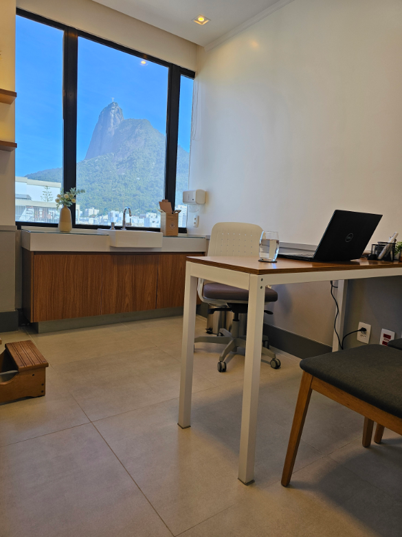

Da Medicina de Família e Comunidade à Psiquiatria
Minha formação começou na Universidade Federal do Estado do Rio de Janeiro (UNIRIO), onde me graduei em Medicina.
Depois da graduação, fiz residência médica em Medicina de Família e Comunidade pela Secretaria Municipal de Saúde do Rio de Janeiro, com RQE 36345.
A experiência na Medicina de Família e Comunidade e no SUS contribuiu para uma forma de compreender a saúde que considera não apenas uma queixa isolada, mas a pessoa, sua história, seu contexto e as diferentes questões que podem estar interferindo em sua vida.
Posteriormente, fiz formação em Psiquiatria pela Universidade Federal Fluminense (UFF) e Associação Brasileira de Psiquiatria, com RQE 36346.
Como entendo o cuidado
Uma consulta não é apenas um espaço para receber orientações. Também é um momento para compreender o que está acontecendo, esclarecer dúvidas, discutir possibilidades e participar das decisões sobre o tratamento.
Dentro do que seja tecnicamente seguro e adequado, procuro avançar respeitando o momento, os limites e as prioridades de cada pessoa.
Meu objetivo é combinar conhecimento técnico com uma conversa clara, para que o paciente consiga entender as possibilidades disponíveis e participar da construção do próprio plano terapêutico.
Consultas com tempo para compreender o contexto
Todas as consultas têm duração de 1 hora.
Na primeira consulta, procuro conhecer o histórico médico, o contexto de vida, as dificuldades atuais, as prioridades e os objetivos do paciente. Essas informações ajudam a construir uma compreensão mais ampla da situação antes de definir os próximos passos.
Nos encontros seguintes, continuamos aprofundando questões relevantes, avaliamos os resultados das estratégias propostas e fazemos ajustes quando necessário.
Não trabalho com a lógica de consultas breves seguidas de um “retorno” gratuito. Todas as consultas são pagas individualmente e recebem o mesmo tempo reservado de 1 hora.
Decisões construídas em conjunto
Nem sempre existe uma única maneira adequada de conduzir uma situação.
Quando há diferentes possibilidades, procuro explicá-las de maneira clara e didática, incluindo o que podemos esperar de cada alternativa, seus limites e os pontos que precisam ser considerados.
Isso também significa que nem todo paciente necessariamente precisará usar medicação. Quando uma estratégia é indicada, o objetivo é que ela faça parte de um plano compreensível para o paciente, e não apenas de uma prescrição isolada.
Saúde mental não acontece separada do restante da saúde
Quando necessário, trabalho de forma articulada com médicos de outras especialidades, psicólogos e nutricionistas.
Essa integração pode ser importante porque sintomas emocionais, sono, saúde física, alimentação, rotina e contexto de vida muitas vezes se relacionam.
Minha formação anterior em Medicina de Família e Comunidade também influencia essa forma de olhar para o cuidado sem fragmentar a pessoa em problemas independentes.

Um espaço profissional sem formalidade excessiva
Questões de saúde mental podem ser complexas sem que a conversa precise ser distante ou excessivamente formal.
Procuro manter um ambiente acolhedor e livre de julgamento, em que seja possível falar sobre dificuldades com naturalidade, clareza e respeito.
Entre as consultas, também mantenho disponibilidade para dúvidas e orientações básicas exclusivamente por texto via WhatsApp.
Formação
Medicina
Universidade Federal do Estado do Rio de Janeiro — UNIRIO
Residência Médica em Medicina de Família e Comunidade
Secretaria Municipal de Saúde do Rio de Janeiro
RQE 36345
Psiquiatria
Universidade Federal Fluminense — UFF e Associação Brasileira de Psiquiatria
RQE 36346
CRM-RJ 52-946427
Atendimento
Atendo exclusivamente adultos em consultas particulares, presencialmente em Botafogo e Piedade, no Rio de Janeiro, e por teleconsulta para adultos residentes no Brasil.
Não trabalho com planos de saúde ou convênios.
Agendar consulta pelo WhatsApp